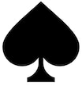
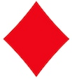
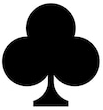

| A magician-turned-mathematician named Persi Diaconis has so much control on his fingers, that he can make the coin come up whichever way he likes! He once constructed a mechanical coin tossing machine that could be controlled to produce any desired outcome! |
sample(6,1)The first 6 refers to the number of pieces of paper (R automatically labells them with 1,...,6), and the 1 tells R to select only one paper. Repeat the same command once again to roll the die once more (you'll possiby get a different outcome). Of course, it is tedious to repeat the command 100 times to roll the die 100 times. So we use simple random sampling with replacement (SRSWR). It is like drawing 100 random pieces of paper from those 6 pieces each drawn paper being replaced before the next draw. In this way you can roll the die any number of times. The R code is
sample(6,100,replace=TRUE)By the way, R is case-sensitive, so the
TRUE must be
in capitals. This may be abbreviated to
sample(6,100,rep=T)Toissing a coin is similar, except that we have only two pieces of paper:
sample(2,100,rep=T)Here instead of Heads and Tails you get 1's and 2's. You can tell R explicitly to use the labels "H" and "T" as follows.
sample( c('H', 'T'), 100, rep=T)
Note the c(...). That is R's way of making an array
of things. Here the things are the two labels "H" and "T". Note
the quotes around them. "T", for example, is just a
label, which is different from T, an abbreviation
for TRUE.
Now you can see some statistical regularity at work. Toss a coin,
say 1000 times, and plot the cumulative proportion of
heads. Let's understand what I mean with a small example, say 5
tosses. If the outcomes are H, T, T, H, H, then the cumulative
proportions are $1,\frac 12,\frac 13,\frac 24,\frac 35.$ It is
always (no. of H's so far)/(no. of tosses so far). We shall plot
these five proportions against (no. of tosses so far). The R
command is
outcomes = sample(c('H','T'),1000,rep=T)
heads.so.far = cumsum(outcomes == 'H')
tosses.so.far = 1:1000
prop = heads.so.far/tosses.so.far
plot(prop, type='l')
Explanation of the code:
outcomes == "H" checks which outcomes
are "H" and creates an array of 1 (yes) and 0 (no). cumsum finds cumultative sums.
1:1000 is just the array 1,2,...,1000. plot makes a plot. The type="l"
tells it to make a line plot.| A standard deck of playing cards consists of 52 cards. There are 4 suits (spade  diamond , heart and club ). There are 13 denominations under each suit: 2,...,10, Jack, Queen, King and Ace. The cards of the three denominations Jack, Queen and King are called picture cards. |
sample(52,5).